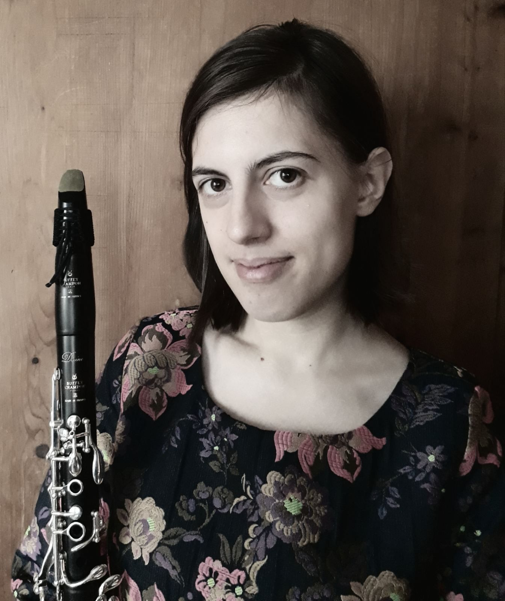
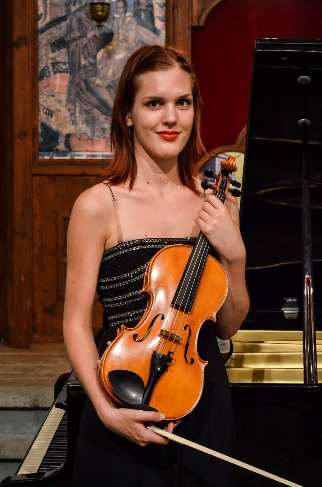
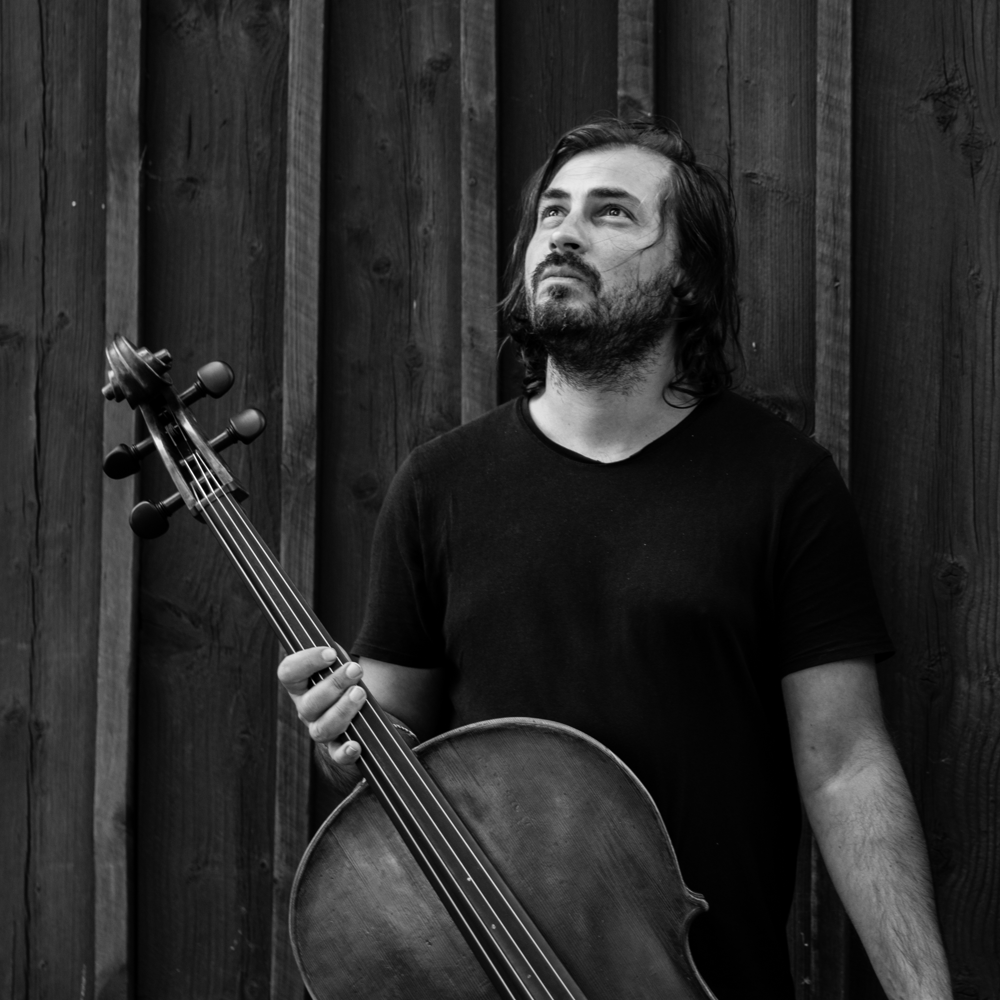
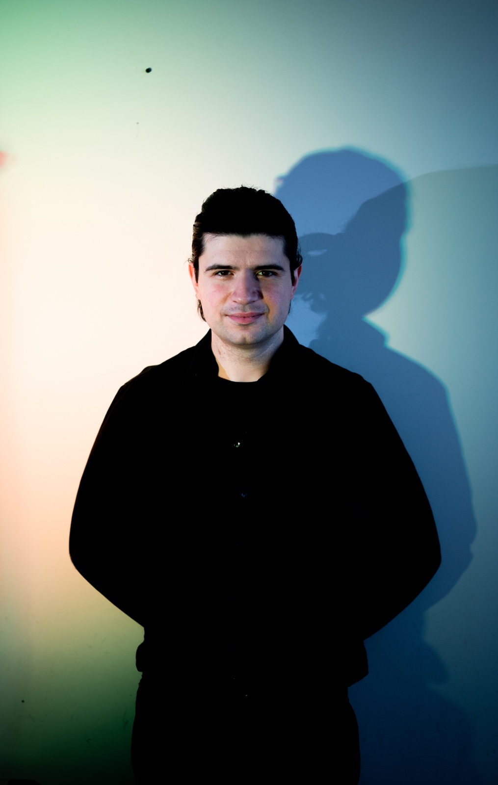

05 CONCERT
24.08.2025
8 PM
ANTON
open stage
Chapel “St. George”
PROGRAM
"100 YEARS AVANT-GARDE"
ANDRE BOUCOURECHLIEV (1925-1997)
ТTHREE NOCTURNES FOR CLARINET AND PIANO (1984)
perform
ANGELINA GOTCHEVA, CLARINET
IVAN KEREKOVSKY, PIANO
BRUNO MADERNA (1920-1973)
“AULODIA PER LOTHAR” FOR OBOE D'AMORE (1965)
perform
IOAN KIOSSEV, OBOE D'AMORE
FERGUS JOHNSTON (1959)
PIANO TRIO (2012)p>
perform
ELENA GANOVA, VIOLIN
STEFAN HADJIEV, VIOLONCELLO
IVAN KEREKOVSKY, PIANO
LUCIANO BERIO (1925-2003)
SEQUENZA I FOR FLUTE SOLO (1958)
perform
MARTIN PAVLOV, FLUTE
PIERRE BOULEZ (1925-2016)
INCISES FOR PIANO SOLO (2001)
perform
IVAN KEREKOVSKY, PIANO
LUCIANO BERIO (1925-2003)h3>
SEQUENZA XIV FOR VIOLONCELLO SOLO (2002)
perform
STEFAN HADJIEV, VIOLONCELLO
PARTICIPANTS

Angelina Gotcheva, clarinet
Angelina Gotcheva, Angelina Gotcheva was born on September 17, 1992 in Sofia. At the age of 13 she began studying clarinet with Borislav Yotsov. In 2011 she graduated from the National School of Music “Lyubomir Pipkov” – Sofia, and then continued her studies at the National Academy of Music “Prof. Pancho Vladigerov” – Sofia, in the class of Assoc. Prof. Borislav Yotsov. In 2013 and 2014/2015 she was an Erasmus student at the Royal Conservatory of Antwerp in the class of Prof. Ivo Lybeert and assistant Raymond Dils. Since 2018, she has been a full-time doctoral student at the Department of Music at the South-West University “Neofit Rilski” – Blagoevgrad, and in 2022 she successfully defended her doctoral thesis. She has realized nine solo recitals and has participated in numerous chamber concerts and festivals, as well as independent and interdisciplinary projects. Together with Ensemble SILAKBO she carried out successful international projects such as Est-Ouest, SynAESTHETICS and others, including world premieres of works written especially for the ensemble. In 2019, she premiered Carl Nielsen’s Clarinet Concerto in Bulgaria with conductor Kalina Vassileva and the Shumen Philharmonic Orchestra. During the period 2008–2019 she was a soloist of the New Symphony Orchestra, Classic FM Orchestra, Shumen Philharmonic, Vidin Philharmonic, Sofia Philharmonic, Antwerp Conservatory Orchestra etc. under the baton of Cornelius Frohwein, Grigor Palikarov, Kalina Vassileva, Deyan Pavlov, Martin Panteleev, Maxim Eshkenazy and Pascale Van Os respectively. In 2024, together with pianist Bogdan Ivanov, she premiered the “Sonatina for Clarinet and Piano” by Svetlin Hristov, dedicated to the performers, at the International Clarinet Fest Festival in Dublin, Ireland. Since 2020, she has been appointed chamber music teacher at the National School of Music “Lyubomir Pipkov” – Sofia.
.jpg)
Ioan Kiossev, oboe d' amore
Йоан Кьосев Ioan Kiossev was born in 1994 in Sofia. He has finished his musical study in the Secondary Music School “Liubomir Pipkov” in Sofia in the oboe class of Atanas Kalev and the National Music Academy “Prof. Pancho Vladigerov” in the oboe class of Prof. Spiro Petkov. In June 2025 he defended his doctoral thesis at the NMA Department of Wind instruments. At the moment Ioan is an oboe part-time teacher at the same department. He won First prize and Golden medal of the XXVth National Competition “Svetoslav Obretenov” in Provadia, Bulgaria; Third prise of the IXth International Competition for German and Austrian music “MAGIC” in Burgas; he is a finalist of the International Competition “Concertino Praga” in a wind trio ensemble guided by the chamber music professor Rossen Idealov. In the period of 2016-2019 he is a principal oboe player in the Symphony Orchestra of Pazardzhik under the guidance of Grigor Palikarov. In the 2022-2023 season Ioan is the first oboe player in Vratza Symphony Orchestra. Between 2018- February 2025 he plays as a first oboe in the Academic Symphony Orchestra. He has been a leader of the oboe group in several concerts of the Bulgarian National Radio orchestra, Sofia Opera and Ballet, Pleven Philharmony and Plovdiv Philharmony.

Elena Ganova, violin
Elena Ganova Elena Ganova has finished her education in the National School of Arts “Vesselin Stoyanov” in Rousse and the National Music Academy “Prof. Pancho Vladigerov” in the violin class of Prof. Yossif Radionov. She is a laureat of competitions such as “Nedialka Simeonova” in Haskovo, “Pancho Vladigerov” in Schumen, “Svetoslav Obretenov” in Provadia and others. She has made a number of solo performances with Sofia Philharmonic, Academic Symphony Orchestra and the Symphonic orchestras in Russe, Razgrad and Pazardzhik. Elena takes part as an active participant in masterclasses of Bulgarian and international notable violinists. Since 2016 she is a viola performer as well, and in 2019 she becomes a member of the Symphony Orchestra of the Bulgarian National Radio. In 2022 Elena took part of the Ancient Music Ensemble “Cantantibus organis”. In 2025 she is assistant concertmaster in some concerts of the New Symphony Orchestra. She is a soloist, chamber musician and orchestra player with numerous performances in concerts, seminars and festivals such as “March Music Days”, “Varna Summer”, “Classical Music Days in Balchik”, “Allegra Festival”, “Sofia Baroque Arts Festival”, “Sofia Music Weeks”, “New Year's Music Festival”, “Prof. Ivan Spassov” Winter's Music Evenings and others.

Stefan Hadjiev, violoncello
Stefan Hadjiev has distinguished himself as a versatile, innovative musician on the international concert scene. A graduate of the Guildhall School of Music and Drama, Stefan has always looked beyond the main-stream and standard definitions of music-making and has dedicated himself to a very varied repertoire, sometimes beyond the boundaries between musical genres. Recent engagements include a critically acclaimed performances as a soloist with the Stuttgart Philharmoniker, Staatorchester Kassel, Southbank Sinfonia London and others. As a chamber musician and soloist Stefan has performed at some of the most prestigious venues in Europe such as Wigmore Hall,Barbican, Tohnhalle Zurich, Philharmonie Berlin, Konzerthaus Berlin, Herkulessaal Munich etc. Beside the classical music, Stefan has always had a strong interest in other musical genres and areas in art and he takes part in various interdisciplinary projects. He has recently produced his first album of electronic music as part of the Klangbox series of the Berlin based label Feral Note. Stefan is also part of Wooden Elephant - an acoustic string quintet that takes electronicbased albums in their entirety, such as Radiohead's Kid A and Björk's Homogenic and reimagine them as singular long-form compositions. The group has performed in some of the most exciting music festivals such as Verbier, London Jazz Festival, Beethovenfest Bonn, Days Off Paris, Schleswig-Holstein and many others. He is also a co-founder of 180° - one of the most innovative festivals in Bulgaria for experimental music and interdisciplinary arts.

Martin Pavlov, flute
Martin Pavlov finishes his music education in the flute class of Prof. Georgi Spassov in the Secondary Music School “Liubomir Pipkov” in Sofia and National Music Academy “Prof. Pancho Vladigerov”. In 2021 he receives a PhD degree in the “Chamber Music and Accompaniment” Chair of NMA. Winner of numerous national and international competitions and has been nominated several times for “Crystal lyre” in different categories. Martin has solo performances with Sofia Philharmony, New Symphony Orchestra, Johannesburg Chamber Orchestra and others. He takes part as a chamber musician and orchestra player in different stages in Austria, France, Italy, Germany, Great Britain, PR China, Kuwait and South Africa. Active participant in national and international music forums such as “Sofia Music Weeks”, “March Music Days”, New Bulgarian music, ISA Wien and others.

Ivan Kerekovsky, piano
Born in 1991, Ivan Kerekovsky finishes the “Liubomir Pipkov” Secondary Music School in Sofia in the piano class of Mili Belcheva. He continues his education in the Royal Music Academy in Brussels in the piano class of Prof. Boyan Vodenitcharov where he finishes his Bachelor's and Master degrees in 2015. Returning back to Bulgaria, Ivan takes part in different concerts and festivals. In 2020 he wrote his first piano composition Etude based on a chant. He is working together with Mikhail Goleminov in his own projects and program products. In 2023 Ivan finished the “Sonic Fibres” MAX-MSP program for composing music by the help of musical gestures which Mikhail couldn't finalize. In 2022 and 2023 Ivan is an active performer and organiser of the Orange Factory concerts, festivals and the competitions. In 2023 he is taking part in the 54th Sofia Music Week International Festival with Bogdan Ivanov – piano, Boris Budinov and Radosvet Kukudov– percussions in the Bartok Sonata for Two Pianos and Percussions and Ligeti Three Portraits. In the Spring of 2025 the flute and piano duo Martin Pavlov and Ivan Kerekovsky had concerts in Bulgaria.